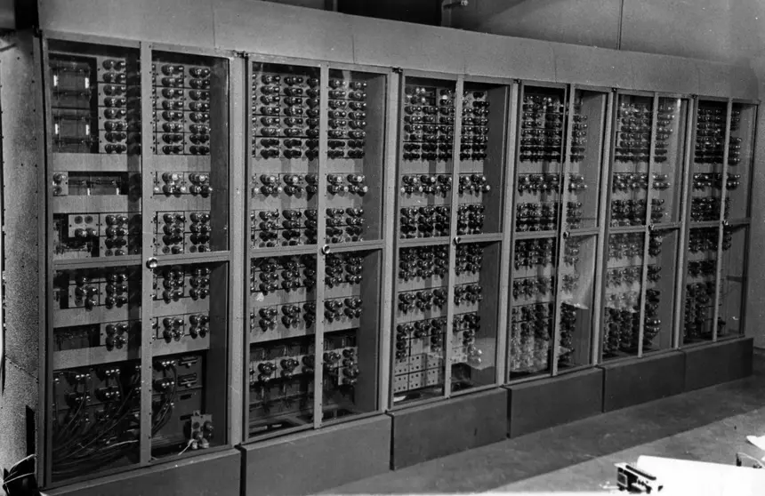

1946 - 1954 годы появились вычислительные машины первого поколения. Первое поколение ЭВМ (электронных вычислительных машин) было ламповым. Ученые университета в Пенсильвании (США) разработали ЭНИАК — так назывался первый в мире компьютер. Днем, когда он официально введен в строй является 15.02.1946 года. При сборке аппарата было задействовано 18 тысяч электронных ламп. ЭВМ по нынешним меркам была колоссальна, площадь 135 квадратных метров, а вес 30 тонн. Потребности в электроэнергии так же были велики — 150кВт.
